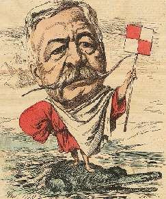

ХОРОШАЯ СКАЗКА С ПЛОХИМ КОНЦОМ
Годовщина смерти великого и ужасного — верней сначала великого, а потом ужасного — Фердинанда Лессепса (1805 — 1894), главной звезды бизнеса и прогресса своей эпохи, этакого Илона Маска девятнадцатого столетия (будем надеяться, что Маску уготована более радужная судьба).
Французский дипломат прославился тем, что осуществил давнюю мечту мореплавателей и коммерсантов: сократил водный маршрут из Европы в Индийский океан на 9000 километров — возглавил и успешно осуществил строительство Суэцкого канала. Существовало множество политических, экономических и финансовых трудностей, но Лессепс все их преодолел.
Это сделало его живой легендой и иконой для инвесторов. Когда в Нью-Йорке открывали статую Свободы, почетным председателем торжественной церемонии пригласили великого Лессепса.
И когда он затеял другой колоссальный проект, строительство Панамского канала, проблем с финансированием не возникло. Деньги полились рекой — и все сгинули в панамских болотах. Лессепс не учел всех тягот новой стройки, плохо составил проект, и разразилась катастрофа. Строители тысячами мерли от малярии, лопались компании, царили воровство и взяточничество. В конце концов стройка века остановилась.
Судебное разбирательство обнаружило массу финансовых злоупотреблений. Слово «Панама» стало нарицательным как синоним наглой мегаломанской аферы.
На старости лет былой герой угодил под суд, получил обвинительный приговор и окончил свои дни в позоре.
Мораль сказки такова: береги честь не только смолоду и даже в особенности не смолоду, ибо запомнят тебя не по тому, каким ты был в начале, а по тому, каким ты стал в конце.